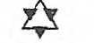
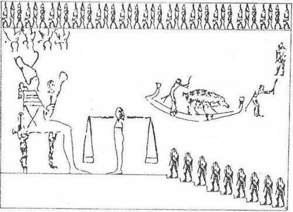
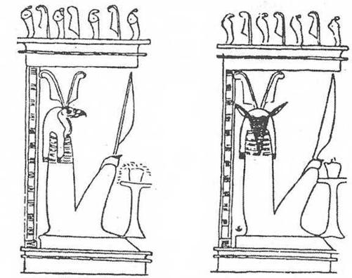
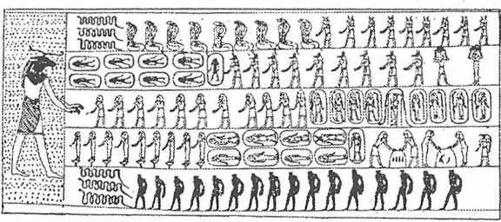

V.BAB
Bütün Varlıkların Sonradan Ne Olduklarını Görmek

Yedi yüz büyülü formül sayesinde, firavunlar devrinde yaşayanlar, ince keten sargılarla sarmalanmış, göğsündeki Osiris’te dirilmeyi simgeleyen altın takısı, vücudunda hiç durmadan akacak İsis’in kanını temsil eden kırmızı donuk akikten düğümü, kalbini gösteren yeşil taştan skarabesi olan mumyayı terk eder etmez, ölünün ruhsal bedeninin sonraki gelişmesinde hazır bulunmasının sırrını biliyorlardı. Şüphesiz tanrılar mahkemesinde doğrulardan biri olarak değerlendirilen ölülere sayısız mutluluklar vaad ediliyordu. Tanrılar için yeryüzünde geçirilen yaşamın çok minik bir şey sayıldığı açıkça bellidir; tıpkı kum çölündeki tek bir kum tanesi gibi. Bununla birlikte, gelecekteki tanrılaşmaya karşın, bu fani dünyada mümkün olduğu kadar uzun süre kalmak istenen bir şeydir. Eski bir Mısır şarkısında söylendiği gibi: “Bira testileri arasında, dostları ile birlikte neşeyle oturmak ve bir gün, göğün altında, onca hayvan kafalı tanrı arasında yüceltileceğim hiç düşünmemek...”
Jean Capart, ruhun tartılması sahnelerine eşlik eden cenaze papirüsleri hakkında, “bütün karışıklıklarının tamamen ortadan kalkmadığı esrarlı bir dille kaleme alınmıştır diye yazmıştır. Mezarların duvarlarına resmi yapılmış bir çok sahne, şüphesiz hiç bir zaman izah edilememiş olarak kalacaktır. Örneğin Teb'de,VI.Ramses'in mezarında bulunan "Güneşin Cehenneme İnişi"sahnesinde olduğu gibi. Orada, ölülerin güneşinin, cehennemlik varlıklarla dolu mağaralarla simgelenmiş cehennemin derinliklerine daldığı görülür. Zaten, ölüler Kitabı’nın bazı bölümleri, hiçbir insana açıklanmaması emredilen korkunç sırları ima etmektedir: “Çünkü inisiye olmayanlar gizli şeyleri bilemezler ve gizli mekanın formülünü tanıyamazlar.” Bize, yarıtanrı (demiurge) kendini, insanı ve evreni niçin yarattığını, eşsiz, fakat çok karanlık bir monolog halinde anlattığı sözlerini aktaran XVII. Bab’ın da açıkladığı gibi, ancak tanrılar insanın nereden gelip nereye gittiğini bilirler. Yaratılış şiirinde insanların yazgısı tanımlanır; hüküm gününe (kıyamete) kadar doğru ve iyi olan için savaşıp yaratıcı sözün zaferini sağlarlarsa, dünyadan gökyüzüne götürülecekleri anlatılır. (A.Moret, L’ugypte pharaonique: Firavunların Mısırı.)
“Yarı Tanrının her cümlesi tam bir şarkı teması gibi, bir anlatış biçimi altında ortaya konmuştur. Bu ancak inisiye lerin gerçek anlamı keşfetmek için bildikleri esrarlı sözcüklerin bir çeşit müziğidir. Tanrı bilimciler bu ünlü XVII. Baba bir yorum getirmişlerdir; “soru-cevap biçiminde, her asıl ifadeye bağlanmış açıklamanın kendisi de karanlık olduğundan, bazan bir ikinci, hatta üçüncü bir anlatım gerekmektedir. Bu karmaşık yöntem ile Saite karşılaştırmasının (Sais “şehir’den türetilmiş bir kelime ve bir hanedan adı) XVII. Bab’da muhafaza ettiği üçlü yorum, çiçekli süslemelerini ilk şarkının eşliğinde işleyen ikili ve üçlü ‘kontrpan’dır (Birkaç parçadan oluşan müzikal düzen).” (A. Moret, aynı yapıt.) Ölüler Kitabının CXXV. ile birlikte olan ana temasının özeti olumsuz günah çıkarma ölü Amenthi’ye girerken okunması gereken tapınma dualarının en belli başlılarından biridir: “Ben gökyüzü mekanlarının, uzay, sonu olmayan bir sıvı okyanusu gibiyken, zamanların ve şekillerin tanrısıyım. Hiç kimse beni doğurmadı; çünkü her varlıktan daha önce doğmuştum. Benim adlandırıldığını bütün isimlerin büyü gücünün şefaati ile gök hiyerarşisini ve kendi kendini yeniden yaratan maddeyi yarattım... Ben Atoum’um ve kozmik okyanusta hiçbir hayat izi yokken ben yine vardım. Ben evrenin başlangıcı ve büyük tabutun içine uzanmış olacağı zaman sonu olacak olanım. Yokluktan, nehrin sularının silindiği gibi çoktan silinmiş varlıkların pınarını fışkırttım ve bedenimde yarının sayısız varlığını da taşıyorum... Ben Atoum’um ve biliyorum ki ölüler Osiris’te sonsuzdurlar. Çünkü Osiris, doğru ve yardım etmeyi sevenler ve Mısır toprağından kötülüğü kovanlar için, aynı zamanda da sonsuzdur. Büyük yıkımda Osiris’in organları oraya buraya dağıldıktan, dünyalar çöktükten sonra, göksel alemlerin dengesini yeniden kurdum; onların parlaklığını iade ettim ve ışığı ışığım olan Ra'nın doğuşunu gördüm... Ben Atoum’um, Heliopolis’in Tanrısal Kedisi’yim. Ey temize çıkmış ölüler, siz ki canlı iken kötülük ruhuna karşı savaştınız, Amenthi’de Osiris’in hizmetkarlarını parçalayan ve cehennem kazanlarında haşlayan uzun bıçaklı ruhları sizden uzaklaştıracağım. Kadavra ve pislikleri yiyen şeytanları ölülerden uzaklaştıracağım; çünkü ben gökyüzü mekanlarının Atoum’u, başlangıçların ve dünyanın sonunun Atoum’uyum.
&
Ölüler, tanrıların dünyasına Tanrısal inek Menourit’in sırtına uzanarak girerler. Ruhun rahatlığını ve dirilmeyi sağlayan ve “thet” sembollerinin koruması altındadırlar. Bütün ölüler, Nil’in öbür kıyısında “Batan Güneş”in mutlu topraklarına bırakılmış, babadan oğula, son kuşağa kadar, Amenthi’nin efendisi, ayak parmaklarına kadar kokulu şeritlere sarılmış ve mumyalanmış olan Osiris’i seyredeceklerdir. Her biri onun önüne çıktığı zaman ona bir hayat pırıltısı verecek ve Osiris aracılığı ile sonsuz olacaktır...
Ölüler ona gideceklerdir. Çünkü onları doğrulayacak yalnız odur; çünkü o, her şeyin son defa olmak üzere yeniden başladığı geniş bir evrende egemendir. Varlıklarıyla mistik olarak onunla birleşecekler, “İsada ölen Hıristiyanlar gibi, Osiris filanca olacaklardır.”
☆
Osiris, Güneş’in Gözü: İnsanın iki varlığı arasında, hiçbir kesintiye yer vermeyen sürekliliği simgeler. Bunlardan biri kısa ve göreceli olarak insanın dünyadaki yaşamı; diğeri sonsuz, fakat hayali değil, gerçek olan yaşamıdır. Doğum ve sonsuzluk arasında hiçbir aralık yoktur; iki halin ikisi de birbirinin nedenidir. Çünkü otuz beş hanedanın çağdaşı olan Mısırlılar, bedenin “ka”sının, yani ölümsüz ruhsal bedeninin çürüyemeyeceğini, mezarda fiziksel yok oluşun mümkün olmayacağını, fakat öbür dünyanın eşiğine bırakılmış bedenin, doğanın bize sunduğu çeşitli örneklere bakarsak, değişime uğradığına inanıyorlardı. Bu sırların ana hatlarına artık sahip değiliz; ne ölülerin esrarlı değişimini ne de büyü sözcükleri inanılmaz güçlere sahip “kudret sözcüklerini” biliyor, ne de Amon tapınaklarının duvarlarının nasıl şeffaflaşabildiğim açıklayabiliyoruz. Beş bin yıl önceki inisiye rahiplerin eylemsel büyüsü (magie operatoire) bizi güldürmemelidir. XX. yüzyıl fizikçilerinin maddeyi parçalayabildiklerini, antimaddeyi keşfettiklerini inkar edemeyiz. Bu inisiye rahiplerin büyüsü, ruhları ölüm dediğimiz yere, yani yaşam sonrası hayata taşıyan görünmez ışındı ve ölülerin koruyucusu Osiris sayesinde, her doğru yolu bulmuş olan ruh, tartılma sınavından sonra, Osiris’in krallığında “yüz milyon yıl” seyir halinde kalabilirdi. Bu tuhaf ölüm evreni, geçmiş ve gelecekte ölçülebilir olanı ortadan kaldırıyor; ölü için şekiller, simya ve akrabalıklar anlamını kaybediyordu. Ölü, Gılgameş Destanında ve Ölüler Kitabı’nın XVII. Bab’ında anlatılan kozmik yıkımları görmüş bulunan tanrılara eşit olabileceğini de biliyordu. Bu ne şaşırtıcı bir görüş ve ne inanılmaz bir keşiftir!.
Bir duvar üstüne bir çehre çizen sanatçının yaşam yarattığına, ağızdan çıkan her sözcüğün bir hayat biçimi olduğuna inanan bir halkın saplantılarının nereye kadar gittiği hiç bilinebilir mi? II. Ramses’in ellerini iyi kullanmasını bilen her usta kopyacının karnını iyi doyurmasını, her on yıl başlarını yağlamasını bildiğini hatırlayalım. Bu fantastik gerçek üstücülüğü, bu gerçek dışı alemin büyüleyici gücünü, bu Osiris krallığının soğuk parlaklığını anlayabilecek miyiz? Bu ölüm dünyasını hepimiz tanıyacağız. Altı bin yıldan daha geride kalmış bir dönemde Mısırlıların bulduğu, düzeni Amon tapınaklarının inişiyeleri olan cesur araştırmacılarca keşfedilen bu dünya, bizim için de o kadar ulu, o kadar değişmez mi olacak?

Ruhlar, Çıkış Merdiveninin dokuz basamağını tırmanıyorlar. Kabul edilmeden önce önünde itirafta bulunacakları Osiris’e doğru gidiyorlar. Eğer doğru ruhlardan biri olarak değerlendirilirlerse, RoSetaou Kapısında Işık Saçanlar haline gelecekleri Douat’ın Yüksek Bölgesine gidecekler.
METÎN: Yargılanmamın Gecesine doğru yürüyorum. Kayıkta “Tahrıbedici Domuz,” “Milyonlarca Yılın Yutucusu” kalpleri, yani yeryüzünde geçmiş hayatlarındaki eylemleri, Osiris’in önüne yerleştirilmiş Yedi Ruhun terazisinde Maat’ın tüyü olan Gerçeğin Tüyü kadar hafif olmayanları bekliyor. Vay “Yılların Yutucusunun Kayığında yer alacak kovulmuşların haline; çünkü onların her biri “Sheniu Odasının acımasız parmaklı oniki işkencecisinin refakatinde, her şeyin kuruyup silindiği Amenthi’nin pis bölgesini, o “Aouai Ateşi Gecesi’ni tanıyacaklardır. (W. Budge,Osiris and the Egyptian Resurrection : Osiris ve Mısırda Yeniden diriliş inancı.)
Bundan sonra temize çıkmış olan ölü, derinliklerinde Orion’un kıvılcımlandığı, takım yıldızların, parlak Ruh Pleyadları’nın (Pleiades) benzeri olarak Douat’ın göklerine yükselecektir. Nihayet, Gök Boğasını görecek, tanrılarla aynı yiyecekleri yiyecektir. Oysa, o belki Nil Vadisinde ancak bayram günleri çiğ soğan yiyebilen, darlık içinde yaşayan bir kişiydi. Belki onca karanlık olan o, sabah yıldızının parlak bir bölümü olacak, göğün bütün kapıları önünde açılacaktır; çünkü o, kapıları açacak büyülü sözcükleri söylemesini bilecektir... Binlerce yıldır dolaşan “Bozulmazlar”a karışacaktır. Dünyadaki kil duvarlı yıkıntı evinde, yaşamında o kadar gösterişsiz olan o, parlak yeryüzünden bir nefes kadar çabuk silindikten sonra, gerçekleşecek geleceğinin bu kadar muhteşem olacağını nasıl hayal edebilirdi? Osiris olmak! Evet, bütün servetini iki nasırlı eli arasında tutabilecek olan o, Osiris’in parlaklığına sahip olacak, yüzlerce kuşağın asırlar boyu seyredeceği parlaklığını bir gün bile kaybetmeyen o yıldız olacaktır... Osiris olarak evrensel ritimlere katılacak, tanrılara eşit olacak, insanların vücudu gibi “yaşayan sonsuzluk” olacaktır...
Ölüler Kitabı, Bize Tanrılar ve İnsanlar Arasında, İyi ile Kötüyü Karşı Karşıya Getiren Çekişmeyi Açıklar
Simgesi Apophis yılanı olan Seth, kötülüğün kökenidir. Işık doğmadan, evrenin kurucu elemanları tamamlanıp bir düzen meydana getirilmeden, yaradılış şekilleri “göğün doğusunda tanrıça Nouit’in cinsel organlarından ruhlar ve tanrılar oluşmadan önce,” Seth vardı. Tanrıça, Doğu ve Batı arasında eğilmiş, elleri ve ayaklan ile Doğuya ve Batıya dokunmaktadır. Seth, Kabil’in kardeşi olduğu gibi, Osiris’in düşmanı ve kardeşidir. îyilik ve kötülük, aydınlıkta ve karanlıkta sırlar veya korkulacak şeyler, bize böyle açıklanmaktadır..
Ra'nın ilk kez Mısır toprağını aydınlattığından beri, iyi ve Kötü birbirine meydan okumaktadır. Ve bu, Çifte Zambak ve Papirüs Krallığında, her biri kırkar bin yıl saltanat süren efsanevi firavunların ilk gününden beri böyledir. Genel yıkımların, uygarlıkların çöküşünün, başlangıçların tufanlarının, tanrılar arasındaki acımasız savaşların anısını saklayan bu toprak üzerinde İyi ve Kötü birbirini kovalar ve Ölüler Kitabı bunu bize açıkça anlatır. Kutsal metinler bize, Osiris’in merhametiyle, ölülerin Amenthi’ye ilk adımlarından itibaren işkenceci şeytanlardan korunacaklarını anlatır. Osiris sayesinde ölüler tam kalacaklar, yani aşağı dünyada kimlikleri parçalanmayacaktır. Osiris’in vücudu kardeşi tarafından ondört parçaya ayrılmış ve bu parçalar Mısır’ın her tarafına dağıtılmıştı. Ölüler kötü nefesten veya lanetlenmişlerin beddualarından korkmayacaklardır; çünkü İsis onlar için ölümsüzlüğü veren ilacı keşfetmiştir (Herodot).
Ağzın, Gözlerin ve Kulakların Açılması
Firavunların tacındaki Naja yılanının İki Mısır’ı, aynı zamanda Doğu ve Batıyı simgelemektedir. Kıvrık başı marangozların kullandığına benzer. “Anubis’in aleti” denilen bir büyü aracı ile yapılan bir theurgie (yüksek ruhlarla ilişki kurmaya dayanan bir çeşit büyü) işlemiyle ağız açma operasyonu sonucunda ölü, öbür dünyada yaşayabilmek için kaçınılmaz bir gereksinme olan yaşamsal organlarına yeniden kavuşur.
Kherheb rahibi, “Karnak’ta Gökyüzü Kapılarının Açıcısı,” “Kitabın Eskiden Beri Sahibi,” ölünün arkadan, omurgadan, “kutsal akımı,” “koruyucu tesiri,” san ankhuyu alabilmesi için büyü yöntemlerinden faydalanıyordu. (Genellikle İsis’in tapınağın iç ve başlıca bölümünde (naos), firavunun arkasında, elini kralın ensesi hizasında, ona manyetik bir kutsal akım iletmek üzere kaldırmış halde durduğu görülür. Bazen bu ağız açılışı, “kurban edilmiş tür boğanın testisleriyle yapılırdı. (Lefebure, Bull. Egypt. II. cilt, sf. 182.) A. Moret, belki de bu törenin, cenaze kültüründe en önemli bölüm olduğunu yazmıştır. Çünkü bu aşamada mumyalanmış, sarılıp sarmalanmış olan cesede, dili ve sözün sahip olduğu yaratıcı güç, görme, işitme, tat ve koku alma, dokunma yetenekleri, kolların ve bacakların hareket serbestliği iade ediliyordu.
Piramitler Dönemi’nden Roma Çağı’nın sonuna kadar mezarlarda kısaltılmış veya tam, resimli ya da resimsiz papirüslerde, “ölünün gözünü açmak için” kullanılan formüllere rastlanmaktadır. Evren ile birlikle yaratılan canlılar serisini simgeleyen bir ağ ile örtülmüş yüzü açma töreni, kutsal şehir Abydos’ta, Naos’un (tapınağın iç ve en önemli yeri) kapılarını iki eliyle açan rahibin figürü ile birlikte temsil edilmektedir. “Mumyanın dinlendiği, aynı zamanda evreni simgeleyen mezar veya naos, ölünün heykelini veya mumyayı koymak için kapıları açılınca aynı ilahi melodi işitilir.” (Schiaparelli, Libro dei funerali, II. cilt.) (Edfou ve Denderah anıtları da görülebilir.)

Douat'ın kapılarının eli bıçaklı bekçileri. (British Museum’daki Anhtai Papirüsü, CXLVI. Bab.)
Aile kültünün rahibi olan oğul firavunun tanrısal kültün rahibi olduğu gibi babasının heykel veya mumyasına sarılıyor, ateşle mumyanın başım veya heykelciği aydınlatıyordu. Çünkü alev, güneş olan Horus’un Gözü’nden gelmiş, öbür dünyada ölünün düşmanlarını kaçıracak olan büyü akımını iletmek için parlamıştı. Sonra, kurban edilmiş bir hayvanın yüreği veya buduyla ölünün yüzü okşanıyor, “Büyük Büyücü” denen yılan şeklinde, tanrısal bir aracın (herminette) yardımıyla ölünün ağzının, gözlerinin, kulaklarının konuşabilmesi, işitebilmesi ve salgılarını kullanabilmesi amacıyla açılmasına girişiliyordu. Ancak o zaman ona, “ruhunun göğsünde olacağı ve arkasında kendisine ait olan şeklini tanıyacağı,” söylenecekti.
“Serdablar’ın Canlı Heykelleri” Önünde Bir Törenin On Bir Aşamada Yapılışı
Bayan Weymant Ronday şöyle yazmıştır: Ağız açma töreni, heykelin (ölüyü ve ruhsal bedenini temsil eden) el ve ayaklarını yumuşatan gerçek “cevher değişimi” transsubstantiation: Bir maddenin başka bir maddeye dönüşmesi güneş ve Osiris doktrinlerinden türemiş bir dizi özel aşamadan oluşur:
1- Ölünün heykeli, yüzü güneye doğru, yeryüzü gibi şekil verilmiş bir kum tabakası üzerine konur.
2- Birbiri ardından birçok defa tütsülenir.
3- Dörder serilik iki dizi kaba konulmuş suyla dört yönün tanrıları adına (Horus, Seth, Thot ve Sepa) heykel temizlenir.
4- Heykelin ağzı lo natron (doğal sodyum karbonat) topağı beş güney, beş kuzey için ve beş topak tütsü sunularak temizlenir. Bu topaklar töreni yönetenin avcuna aldığı küçük bir sepete konur ve sepet iki defa ağıza, iki defa gözlere, bir defa heykelin eline olmak üzere kaç topak varsa o kadar kez olmak üzere götürülür.
5- Bu temizleyici tören, heykele takdim edilen tütsü tanecikleriyle heykel baştan aşağı tütsülenerek son bulur.
Bundan sonra şu aşamalar gelir;
6- Bir deriye sarılmış ve bir yatakta uyur bulunan bir şahsın uyandırılmasını anlatan anlaşılmaz bölüm.
7- Töreni yapanların dördünden birinin (Horus’un dört oğlunu temsilen) heykelin ağzını küçük parmağı ile açıp heykele bir oğulun babasına hitap eder gibi hitap etmesi.
8- Bir öküz, bir ceylan, bir kazın kurban edilmesi.
9- Heykele öküzün ön ayağı ve yüreğinin takdim edilmesi.
10- Heykele önceden ayrılmış parçanın, kanlı et ile ağzını ve gözlerini ovuşturur gibi yaparak tattırma girişimi.
Ağzın ve gözlerin, ağzı kıvrık marangoz kalemi ve werhikaou denen bir büyü objesi gibi çeşitli araçlarla açılması. Bu sonuncu alet, ölünün “ağzını ve gözünü açmak’la kalmıyor, aynı zamanda tanrılar üzerinde egemenliği sağlıyordu. Tanımlanan hareketlerin her birini açıklayan sözlerle süren tören, biter bitmez yeniden başlıyordu. Ağız açma aşaması, bu sefer yeni bir dizi araç kullanılarak yapılıyordu: Demir kalem, kırmızıya boyanmış parmak, kırmızı taşların konduğu bir kese, dört tuğla v.s. Sonra heykelin ağzına özel bir madde (bir tür iç yağı veya tereyağı) sürülüyor, arkasından sütle ıslatılıyordu. Öküz, ceylan ve kazın kurban edilmesi tekrarlanıyor ve tören heykelin tuyaletinin yapılması ile son buluyordu: Başına “coufiyeh” giydiriliyor, ona çeşitli renklerde kumaş şeritler takdim ediliyor, koku sürülüyor, yüzü boyanıyor, kral elbiseleri giydiriliyordu. Son olarak tütsüleniyor ve bu operasyon, Uraeus* tanrıçası ve bütün Mısır tanrıları adına tekrarlanıyordu. Tören çıkışında bir yemek veriliyor, yer süpürülüyor, “dokuz arkadaş veya saray adamı gelip, merasimle heykeli kaldiriyorlardı.” (Bu “canlı heykeller” hakkında: Bedenler, ölülerin sonsuzluk portreleri, canlı renklerle boyanmış, yüzleri kakmayla yapılmış gözlerle aydınlanan, keten giydirilmiş, mezarların “serdab”larına konmuş heykeller. Jean Capart, Memphis, XVIII. Bab.) Bu serdablara, yani mastabaların (I. İmparatorluk Döneminden, dört açılı eski Mısır mezarları) mihraplarında oyulmuş yuvacıklara, Eski Mısırlılar’ın çok karışık cenaze törenlerinden sonra, ölünün canlı heykelleri genellikle Yukarı ve Aşağı Mısırı simgeleyen iki heykelcik konuyordu.
* Ureus: Tanrısallığın ve krallığın, Doğu ve Batının, aynı zamanda Yukarı ve Aşağı Mısır’ın sembolü olan Naja yılanı
Ölünün akrabalarının talimatı üzerine ve bu iş için ayırdıkları paranın önemine göre, rahipler bu heykellerin önünde, dumanı “sonsuz bedenin” burun deliklerine gelecek şekilde, zevk veren tütsü taneciklerini düzgün bir şekilde yakıyorlar ve ölüye borçlu olunan kurban hizmetlerini sağlıyorlardı. Vakıflar, rahip ailelerine ölüler kültünün sürdürülmesinde gerekli kaynakları sürekli olarak sağlıyordu.
Jean Capart: “Bazı mezarlarda vakfı tesis eden vasiyetnamelerin kopyalan bulunmuştur,” diye yazmaktadır. Bazan ölmüş bulunan kimsenin kendisi servetinden rahiplere ayrılacak bölümü göstermiş ve “hangi şartlar altında bir nesilden öbürüne geçeceğini” tayin etmiş bulunuyordu. (J. Capart). Ve eğer, özellikle hizmetindeki bir rahip veya kendi neslinden biri kanun önünde itirazda bulunmaya cesaret ederse veya ölünün isteklerini tanımazlıktan gelirse, mezarına tecavüz ederse, serdabındaki ruhsal bedenine saygısızlık ederse, ölü onu, ölülerin kalbinin tartıldığı Anubis’in terazisinde, ünlü tanrılar mahkemesiyle tehdit ediyordu.
“Sana Kalbini Karnında Getiriyorum.”
Özetle, ayrıntıları Mısır’ın en eski doktrinlerine dayanan ağzın ve gözlerin açılma törenleri, ölünün ruhunu bulmasını ve bir “yaşam akımı geçen” vücudunu kullanabilmesini sağlıyordu. Kırk iki adalet tanrısı ve sonsuz tout ankh olan Osiris’in önüne çıkmadan, ölünün mumyası "Altın Salondaki çakal başlı Anubis tarafından sarılıp sarmalanıyor ve üstüne kokular sürülüyordu. “Horus ve Anubis cenaze sargılarını düzeltirler. Thot, bazı dualar ile elini ayağını sağlığa kavuşturur.”
Bu satırları Maspero’nun “Memoire sur quelques Papyrus du Louvre: Louvre’daki bazı papirüsler hakkında not” adlı çalışmasında okumaktayız. Baştaki yedi delik ve karın bölgesindeki doğal delikler, kutsal araçlar, ayinsel sıvazlamalar ve bazı büyü formülleri sayesinde açılıyordu. A.Moret, Ritüel du Culte divin en Egypte: Mısır’da Tanrısal Tapınmanın Ayinleri’nde bu uzun törenin basitleştirilebildiğini yazmıştır: “Bazen skarabe biçimi verilmiş taştan veya metalden bir yürek, ağzın açılışından sonra ölünün kalbine konuluyor ve Ölüler Kitabının bablarından biri okunuyordu. Bu törenler Rekhmara Mezarındaki ‘Işık Saçanın kalbini bu kimseye getirmeyi, ağzını açmayı, tanrısal adaklarla ona biçimini vermeyi anlatan bölüm,’ adındaki bir yazıda toplanmış bulunmaktadır.” (Ph. Virey, Rekhmara mezarı). A. Moret’nin “Mısır’da Tanrısal Tapınmanın Ayinleri’nden aldığımız çevirisi yapılmış bölüm şöyledir: “Yerine koymak için sana kalbini karnında getiriyorum. Horus’un kalbini anasına, İsis’in kalbini oğluna getirdiği gibi. Böylece, karanlıkların dibinde ölü görebilecek, işitebilecek, teneffüs edebilecek, dinleyip, konuşabilecektir. Rahat sonsuzluğunda, ölümsüz efendilerinin arzularından kaçmamaları için bacakları olmayan dişi heykelciklerle cinsel zevkleri tadabilecektir.

Douat dünyasının mağara tanrıları ve aşağıda kendilerine yalnızca Osiris önünde temize çıkanların tanıdığı Yukarı Bölgeler yasaklanmış olan, kafası kesilmiş ölüler. (British Museumdaki, The Book of Dead. The Papyrus of Queen. Netchemet.)
Temizlenme Sahnelerini Tasvir Eden Abideler
Ağız ve gözlerin açılmasından önceki temizlenme törenleri gebellikle bize aktarılmıştır. Teb Nekropolunde Khonsu Mezarı’nın girişini gösteren bir anıtın önünde, hizmetkarların, üzerine büyü formülleri kazılmış bir mezar taşını diktiklerini görüyoruz.
Mezar taşının önünde, bir heykel ölüyü temsil etmekte, tören için leopar derileri giymiş cenaze rahipleri heykele saçılar (libations) yaparken, iki kiralanmış ağlayıcı kadın dövünmektedirler. Kurban edilmiş Typhon (Eski Mısır’ın “Thoubon veya Set-Siton” adlı toprak ve çöl tanrısı olan Osiris’in kardeşi Seth’in Yunan dilindeki adı) hayvanı derisinin (leopar) rahiplerce giyilmesinin cenaze kültünün en eski gereklerinden biri olduğunu hatırlatalım (A.Monet). Bu deri giyiminin genel anlamı, ölüyü mumyalama töreninde söylenen şu cümleyle tanımlanır: “Kalbinin ferahlaması için iyi ayinler, düşmanın Seth’in derisiyle iyi cenaze törenleri yapıldı,” “kurbanın derisini giymek, kurbanın zayıf noktasını edinmenin en sağlam yolu sayılmıştır,” (Lefebure, le Mythe Osirien: Osiris Mit’i). Sonraları, ölünün bütünlüğünü korumasına yardım eden mumyalamanın yerini, bir parça mide bulandırıcı olan ölüyü parçalama adeti aldı. Bununla birlikte cenaze törenleri ve eski formüller değişmedi.
Yağlanma töreni sırasında bir okuyucu rahip, bir papirüs tomarından uygun duaları tekrarlar. Ölünün ağzını ve gözünü açma araçları önünde hazırdır. Teb mezarlarının duvarlarındakilere benzer resimlerin bazı sahnelerinin neyi ifade ettiğini yeterince anlayamamaktayız; Menna mezarında veya Mentou ker khesef’tekilerde olduğu gibi. Teb Nekropolü’nün bir mezarının girişini gösteren bir anıt önünde, hizmetkarlar üzerine büyülü formüller yazılı bir mezar taşını dikmektedirler. Stelin (mezar taşının) önündeki bir heykel, ölüyü temsil etmektedir. Bu heykelin önünde, kiralanmış iki ağlayıcı kadının feryat figan ağladıkları, tören leopar derilerine bürünmüş rahiplerin birinci ve ikinci dereceden libasyonlar (törensel serpmeler) yaptıkları görülür. Okuyucu rahip bir papirüs tomarından uygun duaları okumaktadır. “Ağız ve gözleri açmaya sembolik olarak yarayan araçlar yanına konmuştur. Bu kutsal metinler bize ne öğretmektedir?” A. Moret, “Osiris’in öldürülüşünden ve insanların ölümünden sonra, birinin ve öbürlerinin cesetleri dünyada kalıyor, oysa ruh gökyüzüne gidiyordu,” diye yazmıştır.
Ölünün Embriyo Haline Dönüşü ve Kemiklerinin Yerine Gelişi
Kutsal hizmetlerden önce her ölü hareketsiz, çıplak ve terk edilmiş bir cesetten ibarettir. Tabii tutulacağı dualar, onu mumyalanmış ve sargılara sarılmış bir “mumyalanmış Osiris, bir ölü Osiris” haline getirecektir. Bu sözcük, Ölüler Kitabının dualarında sürekli tekrarlanır. Arkaik Dönemde nekropollerin girişlerinde kendilerine ayrılmış köylerde yaşayan uzmanlar bu dokunulmazların Nil’i geçmek ve yaşayanların köylerinde yerleşmek hakları yoktu. Ölülerin iskeletlerinin kemiklerini ayırıyor, etlerini paralıyor, iç organlarını çıkarıyor, mumyalama işlemini yapıyorlardı. Bal karıştırılmış kokularla ovma, iskeletin ve etlerin bir araya getirilmesini kolaylaştırıyordu. İskeleti bir araya getirip etlerle kabil olduğu kadar, başka bir ölüden herhangi bir parça almaksızın, örtmek gerekiyordu. Kemikleri bitiştirmek ve bütüne, doğacak her varlığın ana karnındaki çocuk biçimini vermek de önemliydi.
Kemiklerin birleştirilme töreni herkese, Osiris’in ilk olarak kemiklerinin Horus, Thot ve Anubis tarafından birleştirildiğini gördüğünü hatırlatıyordu. Bu önemli olay, bütün Mısır tapınaklarında tanrının omurgasını gösteren Tet sembolü dikilirken gösterişli ayinlerle kutlanıyordu. Daha sonra, vücudun tamlığını bozmayan mumyalama yöntemi, bu biraz mide bulandıran iskelet parçalamanın yerini aldı. Fakat cenaze törenleri sırasında söylenen formüller değişmeden kaldı.
Ra, İnsan Bedenini Gözyaşlarıyla Yaptı
Ölünün ruhu, hayatın ve ışığın ebedi kaynaklarına yükseliyordu. Bu serbest ruh “ba” idi; “can” (espiri); “ka” ruhsal beden; “sekhem” şekil; “khabit” gölge; “ren” isimdi. Ruh, gök tanrısı olan Horus’un Gözü oluyordu. Fakat dikkat etmeliydi! Onu kovalayıp rahatsız etmek için ilk cehennemlerde, nefesi yeryüzünde yaşayan ve ölenlerden hiç ayrılmayan korkunç Seth’i karşısında buluyordu. G. Jequier, Religion Egyptienne: Mısır Dini adlı yapıtında, “Horus’un gözlerinin kalkanı altında ölü, devamlı yolculuğunu güneş gibi hep yeniden doğarak sürdürebilecektir,” diye yazmaktadır. S. Mayassis’in yorumuna göre “Horus’un Gözü kökenini güneşin ışığından alan, onunla birlikte var olan, bu ışıktan çıkıp onunla karışan ruhun ışığını simgelemektedir... Horusun gözleri insanları ve eşyayı yaratmıştır. Göksel yüzün gözleri evreni gördüğü zaman, evren vücut buldu; güneşin ışıkları bir gözyaşı dalgası gibi evreni kapladı; böylece Horusun Gözünden dökülenler, insanlara ve tanrılara gerekli olan hayatı verdi... Güneşten dağılan ışık gibi, Horus’un Gözü bütün gerçekliği yarattı.”
Böylece, dünyada yaşayanlar, ölmek için doğmuş yığınlarca varlık, Ra'nın gözbebeklerinden, ilk ve dölleyici ışıkla birlikte fışkırmıştı; çünkü, “Ra, insanların bedenlerini gözyaşlarıyla yaptı...” diye yazılmıştır. Her ruh gökyüzüne doğru uçar. Işıkta, güneşte ışınmaları canlıların vücutlarını yaşatan, yeri güneş olan tanrısal-evrensel ruhta eriyecektir. Evrensel ruh, ruhların ruhu, bütün yaratıkların hayat kaynağı, tanrısallığın ta kendisi, tanrıları yapan gizemli güç olup, tanrılar onun şekilleri ve tezahürleridir. Bu evrensel ruh, Horus’un Gözüdür. Ölü ancak, onu tanrılara eşit kılacak, sonsuzlaştırıcı büyülü akımı ona verecek, onu saflaştırıp hoş kokulu yapacak Horus’un Gözünün kokusu tanrıların kokusudur bu ışık gözüne sahip olduğu zaman, “ses’te doğru” diye nitelenebilir.
Bunun içindir ki cenaze rahipleri, ölünün de sırası gelince Işık Saçanlardan biri olması için, ölünün heykeline törenle kokular sürerler. Okuyan şöyle der: “Ey ölü Osiris, rahibin açtığı gözüne Horus’un Gözünün ışığını koyuyorum.. Ey ölü Osiris, saçlarına Horus’un Gözünün ışığını koyuyorum...” Moret’nin çevirisi şöyledir: “Ey AmonRa, senin için Horus’un Gözü’nü hazırladım. Kokusu sana geliyor. Sana gelen Horus’un Gözünün kokusudur; AmonRa, sen ki reçineyi seversin...”